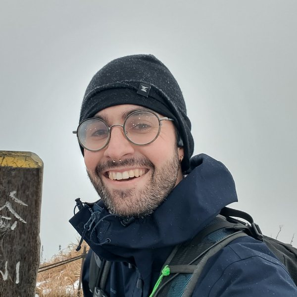

Secteur énergie · via MP data · 2 ans
Logiciel de simulation de mécanique des fluides
- Mission
- Développement, sur deux ans, d'un logiciel de simulation de mécanique des fluides.

Ingénieur en mathématiques appliquées, machine learning et simulation numérique
Ingénieur ENSIMAG, je conçois depuis plusieurs années des outils de calcul pour l'industrie : simulation de mécanique des fluides, optimisation et recherche opérationnelle, machine learning. Je souhaite aujourd'hui orienter mon activité vers la recherche.
Dernière mise à jour :
Modélisation et simulation de phénomènes physiques, mécanique des fluides.
Recherche opérationnelle et planification appliquées à des problèmes industriels.
Apprentissage statistique, modèles génératifs, détection d'anomalies.
Simulation numérique, optimisation, recherche opérationnelle, statistiques
Autoencodeurs, VAE, TensorFlow, Keras, Pandas, A/B testing
Python, C++, SQL / PostgreSQL, R, Java, JavaScript
Spark, HDFS, AWS, Gurobi
Français (natif), anglais (courant), suédois, espagnol